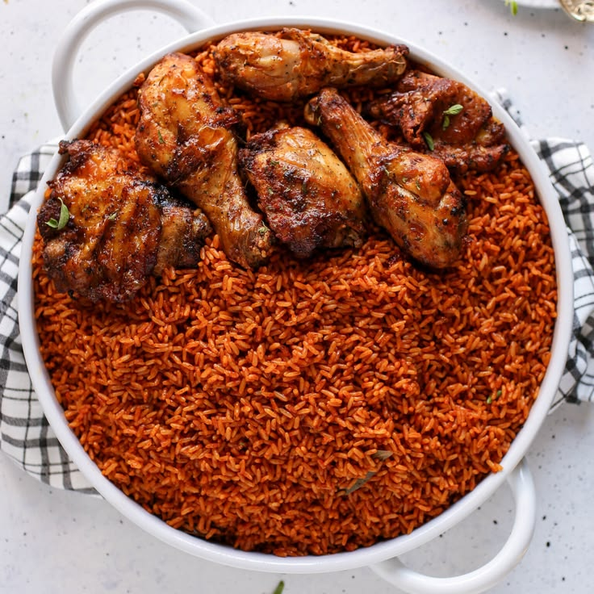
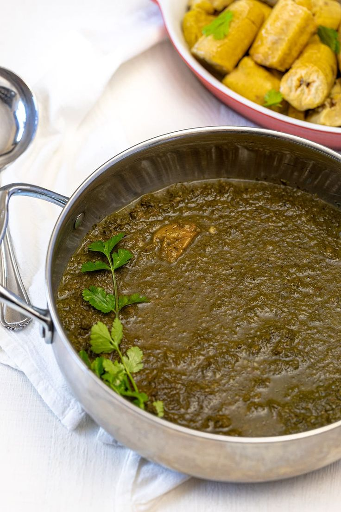

Ancient Grains Are Back
Chefs worldwide are rediscovering teff, fonio and sorghum for their nutrition and flavor.

A smoky, tomato-based rice dish loved across West Africa, made with scotch bonnet peppers and aromatic spices.
View recipe
A soft, tangy flatbread made from teff flour, used as both plate and utensil in Ethiopian cuisine.
View recipe
A comforting Rwandan dish of pounded cassava leaves slow-cooked with aubergine, onions and groundnuts.
View recipeChefs worldwide are rediscovering teff, fonio and sorghum for their nutrition and flavor.
Dishes like jollof rice and suya are appearing on restaurant menus far beyond the continent.
Leafy dishes such as Rwanda's isombe show how traditional African cooking is naturally plant-forward.